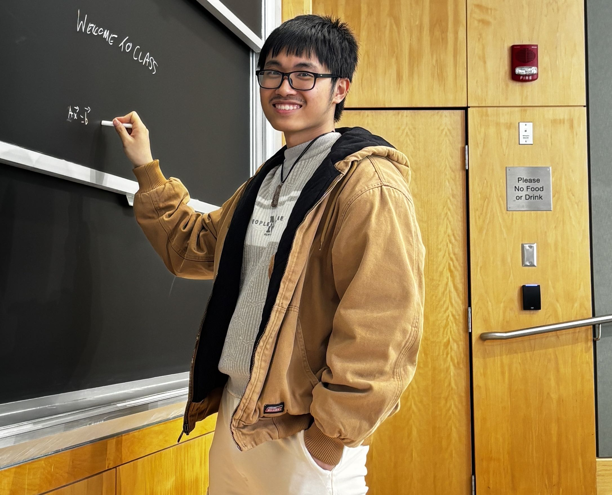

Tien Tran
Welcome to my minimalistic world! I am a first-year PhD student in Applied Mathematics at UB, having received two degrees from the same institution: a B.A. in Computing & Applied Mathematics and a B.S. in Computer Science.
Research interests:
- Numerical Analysis (Numerical PDEs & Numerical Linear Algebra)
- Physics-Informed Neural Networks (PINNs)

Me visiting MIT
News
-
May 2026
Graduated with two degrees: B.A. Computing & Applied Mathematics and B.S. Computer Science.
Finished DRP topic: "A Comparative Analysis of Shallow Neural Networks (SNN) and Finite Element Method (FEM) in Solving PDEs." with Sayantan Sarkar - Dec 2025 Finished DRP topic: "Simulation of Differential Equations by Finite Element Methods (FEM)." with Sayantan Sarkar
- Jun 2025 Started a research project with Dr. Daozhi Han in analyzing the long-term behavior of the Lorenz 96 model.
- Jan 2025 Started TA work for CSE 331 (Algorithms and Complexity) and CSE 241 (Digital Systems).